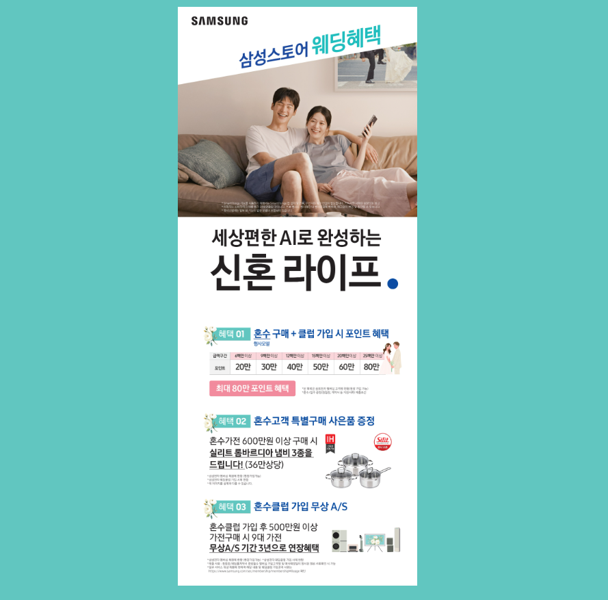
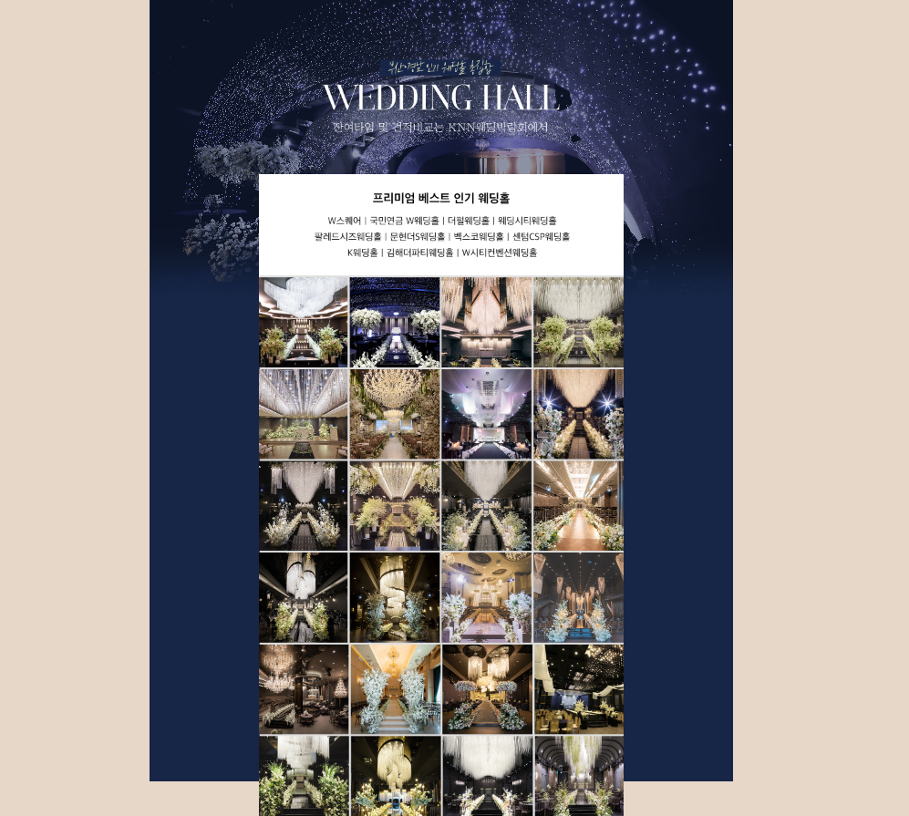
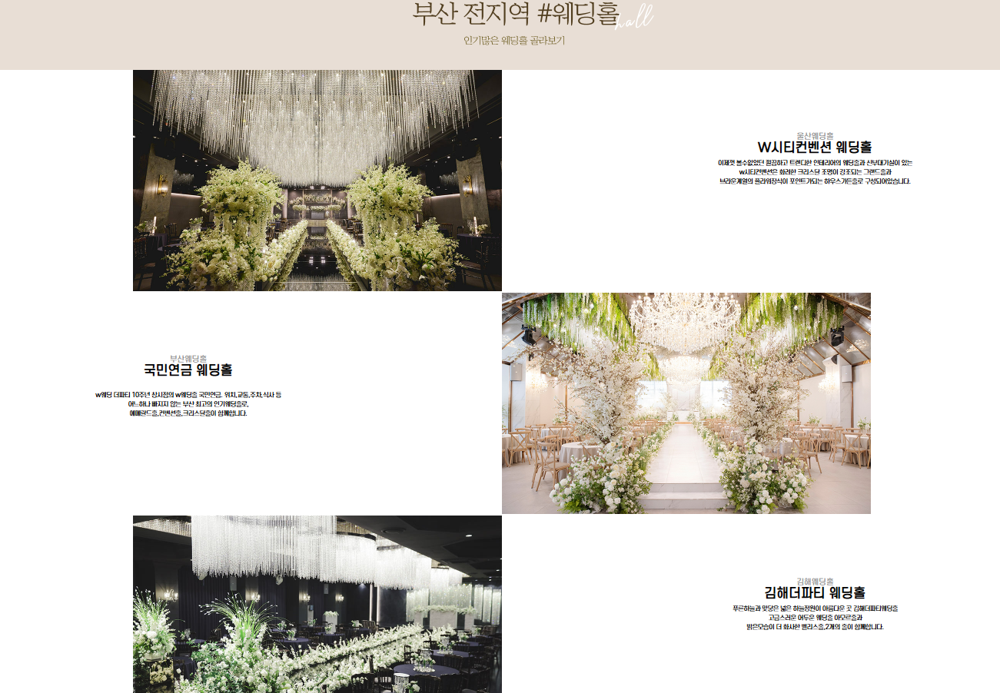
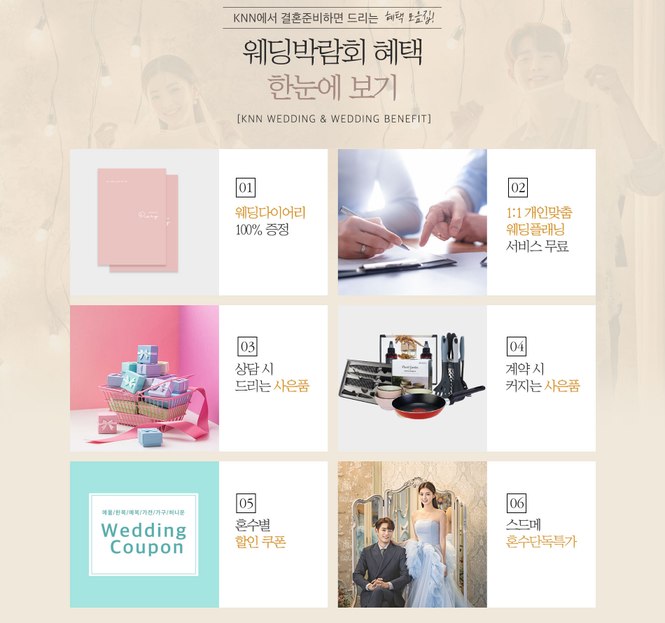

결혼을 준비하다 보면 웨딩홀부터 스튜디오와 드레스, 메이크업, 예물, 예복, 혼수까지 알아봐야 할 항목이 많습니다. 부산 W웨딩시티 웨딩박람회를 알아보고 있다면 방문 전에 필요한 항목과 예산을 미리 정리하고 자신에게 맞는 조건을 비교해보는 것이 좋습니다.
부산 W웨딩시티 웨딩박람회에서는 무엇을 확인할까요?
웨딩박람회는 결혼 준비 과정에서 필요한 여러 분야의 정보를 한자리에서 비교해볼 수 있는 행사 형태로 운영되는 경우가 많습니다.
각 업체를 따로 알아보는 것보다 자신의 결혼 일정과 예산에 맞춰 여러 조건을 비교해볼 수 있다는 점에서 결혼 준비 초기에 정보를 정리하는 데 활용할 수 있습니다.

웨딩홀부터 스드메까지 필요한 항목을 비교해보세요
결혼 준비는 여러 항목을 한꺼번에 결정해야 하는 경우가 많기 때문에 각각의 구성과 조건을 비교해보는 과정이 중요합니다.

💒 웨딩홀
희망 지역과 예식 일정, 예상 하객 수에 맞는 조건을 비교해보세요.
👰 스드메
스튜디오와 드레스, 메이크업 구성과 포함 항목을 확인하세요.
💍 예물·예복
원하는 스타일과 예산을 미리 정리한 뒤 비교하는 것이 좋습니다.
🏠 혼수
가전과 가구 등 필요한 품목과 우선순위를 정리해보세요.
박람회 방문 전에 결혼 일정과 예산을 정리해보세요
박람회 현장에서는 다양한 업체와 조건을 만나게 될 수 있습니다. 따라서 방문 전 자신의 결혼 계획을 어느 정도 정리해두면 필요한 상담을 보다 효율적으로 받을 수 있습니다.

상담과 계약 전에는 세부 조건을 확인하세요
웨딩 관련 상품은 기본 구성과 선택 옵션에 따라 실제 최종 비용이 달라질 수 있습니다.
가격만 확인하기보다 포함되는 항목과 추가 비용, 일정 변경이나 계약 취소 시 적용되는 조건까지 함께 살펴보는 것이 좋습니다.

방문 전 사전신청 정보를 확인해보세요
웨딩박람회 방문을 계획하고 있다면 행사 일정과 운영 방식, 사전신청 방법을 미리 확인하는 것이 좋습니다.
제공되는 안내와 혜택은 행사 상황에 따라 달라질 수 있으므로 신청 페이지에서 최신 내용을 확인한 뒤 방문을 준비해보세요.
